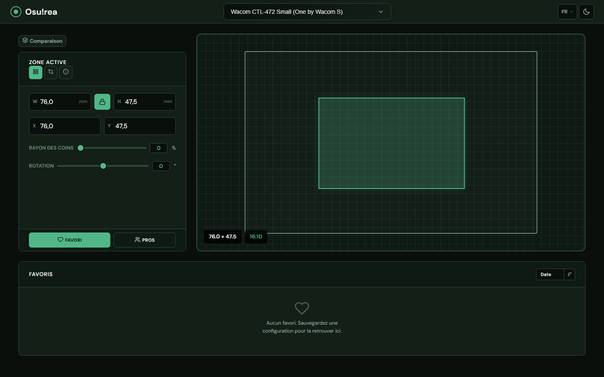
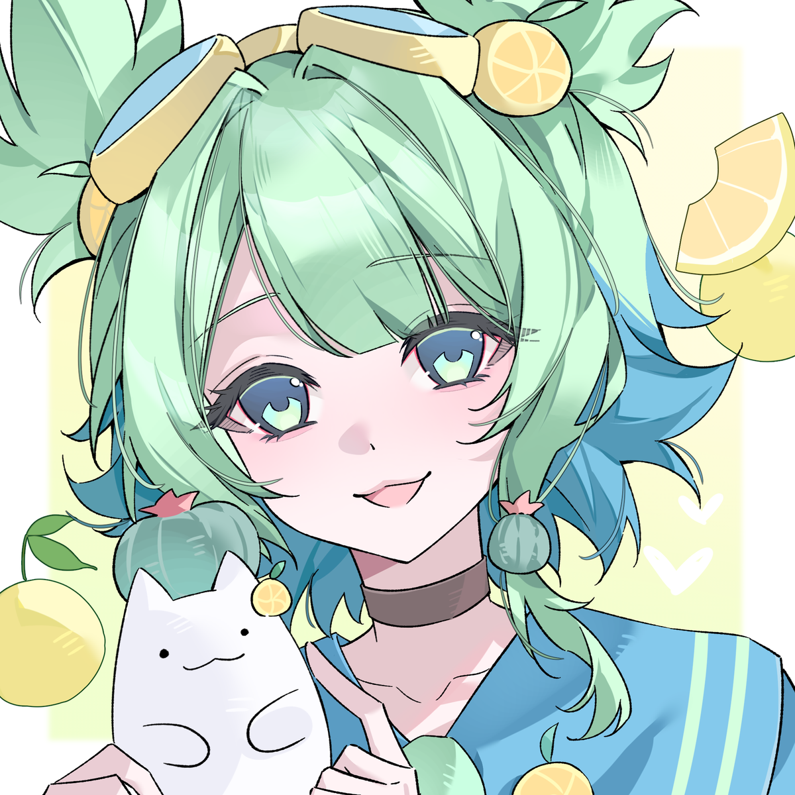
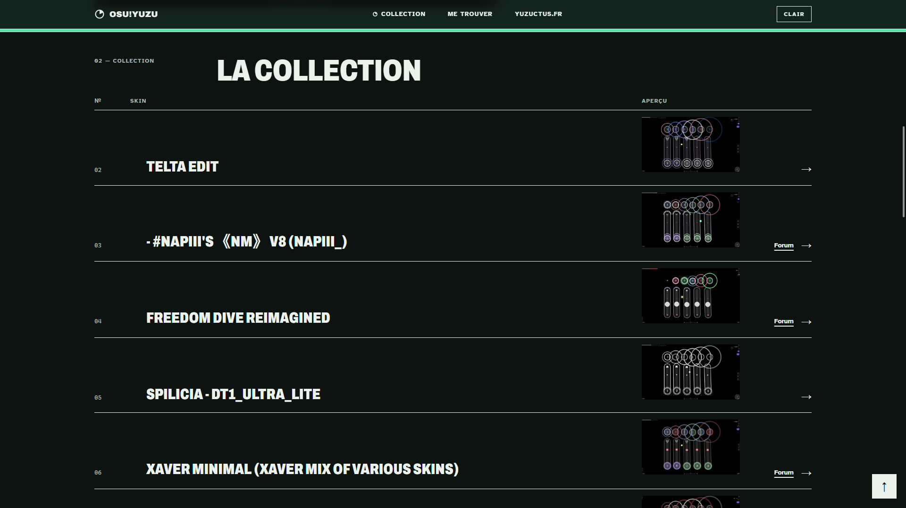
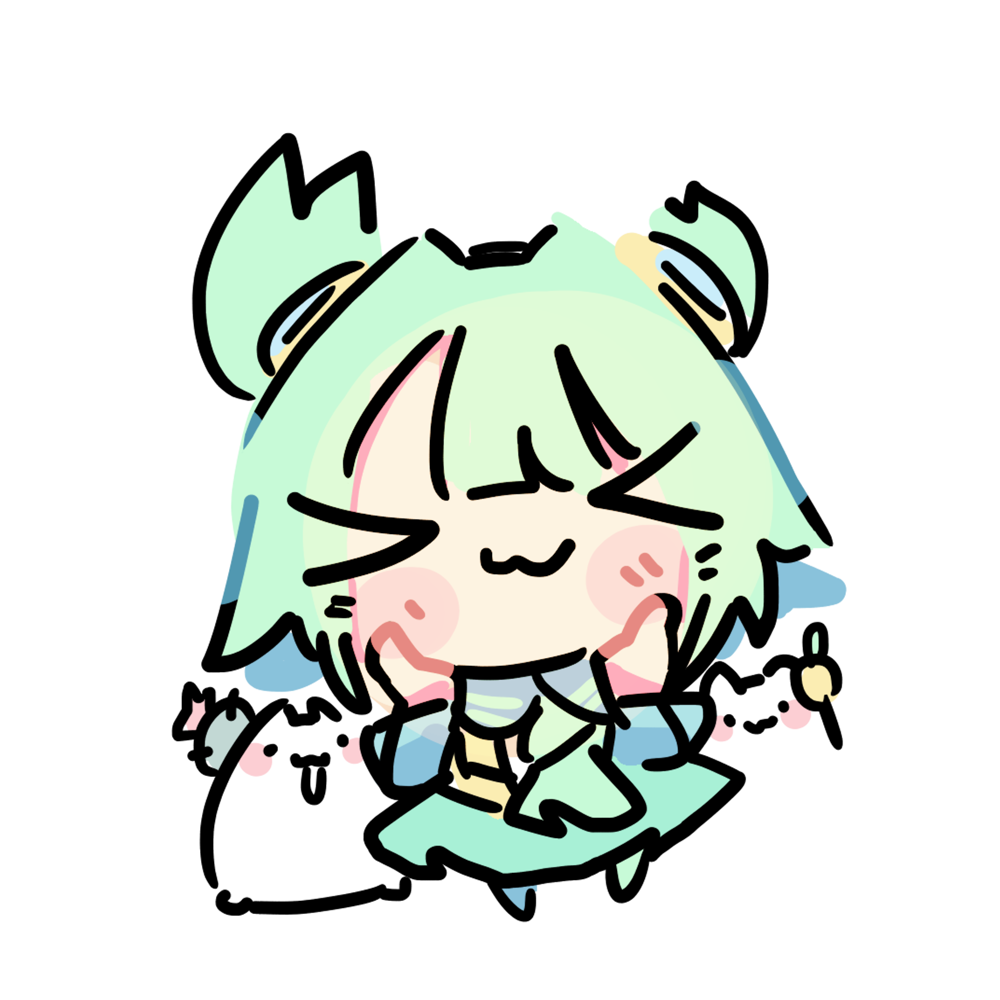
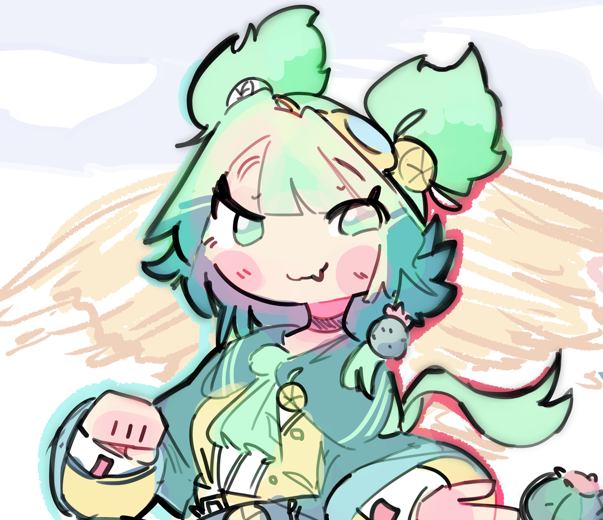

OUTIL POUR OSU!
Osurea
Comparer deux réglages côte à côte, comprendre leur différence et partager une configuration précise.

PROJETS PERSONNELS / YUZUCTUS.FR
Je construis des outils autour d’osu!, de la musique et de ce que j’aime explorer.

PROJET À LA UNE Osurea Comparer deux réglages côte à côte
OUTIL POUR OSU!
Comparer deux réglages côte à côte, comprendre leur différence et partager une configuration précise.

Des outils web, une collection osu! et un logiciel de rendu.

Statistiques d’écoute, profil public et présence Discord. FM.Yuzuctus rassemble l’historique d’écoute, la présence Discord et un profil public partageable.
Réseaux, code et jeux : les liens utiles au même endroit.


L’ORIGINE DU NOM
Le lore tient littéralement dans une pâtisserie.
Les illustrations de ce site ont été réalisées par ces artistes et sont utilisées avec leur accord.